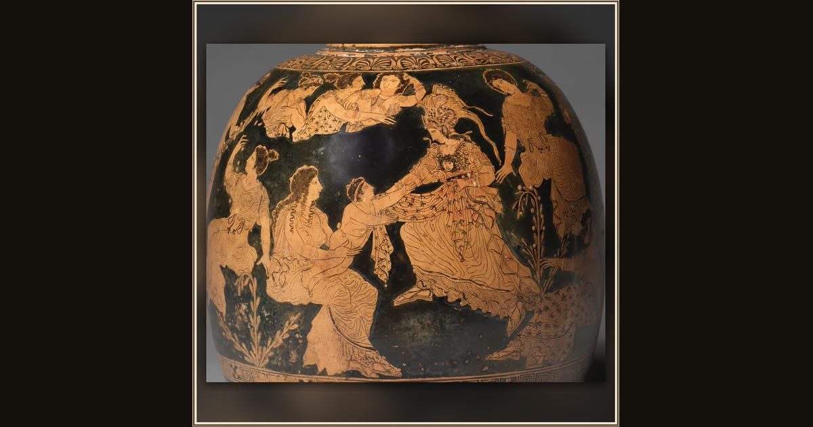

Red-Figure Squat Lekythos (Oil Vessel): Birth of Erichthonios
Meidias Painter (Greek, Attic, active c. 420–400 BCE) · c. 420–410 BCE · cma
Ge, the earth goddess, presents the infant Erichthonios to Athena on this painted vessel; the hymn invokes Earth as mother of all beings (1). Explore its place in Homer's The Homeric Hymns, Hymn 30 · To Earth, line 1.